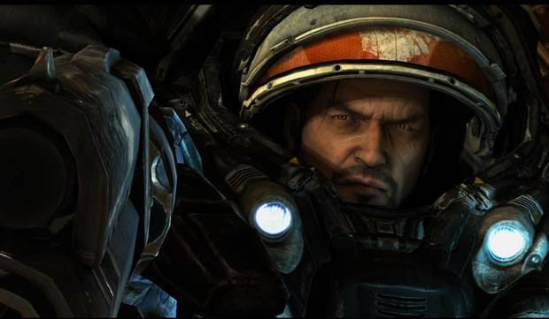
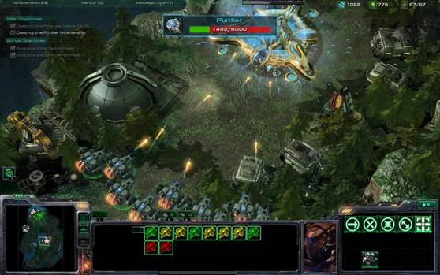
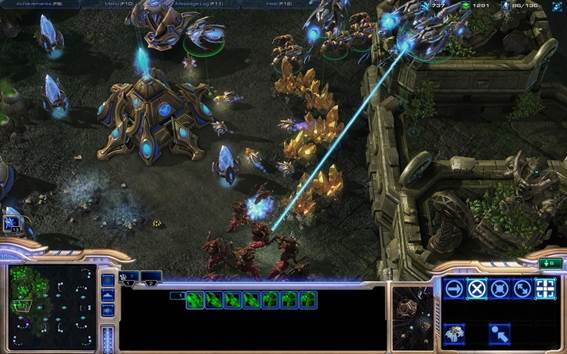
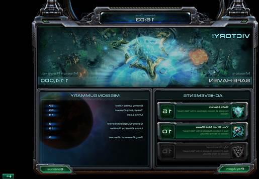

The campaign is the first of many of these delights. You may have heard that Starcraft II features only a single campaign: that of the human faction known as the Terrans. One of the game's few disappointments is that the other two factions--the Protoss and the Zerg--don't get their day in the sun, so if you're a newcomer who wants to prove your superiority (or inferiority) online, don't expect the campaign to prepare you for the potential onslaught. But the campaign is hardly a one-note wonder, offering loads of variety, including an entire set of missions that divulges important story elements from an entirely different perspective. Yet even outside of those devious missions, you accomplish diverse and interesting tasks throughout the story. In one early mission, lava periodically rises onto the mainland, posing a threat to any units not positioned on high ground. In another, an exploding sun causes a deadly wall of flame to steadily push you across the map. From one mission to the next, there's an intriguing new development that keeps you devoted to seeing what surprise is waiting for you next.
Many of these missions are RTS staples: Lead these small groups of units down this linear path, defend this specific structure, and so on. Yet Starcraft II gives these tasks meaningful context. Take the very first mission, for example. It's a very easy training mission, but one side objective has you take down holograms displaying emperor Arcturus Mengsk's political propaganda. After destroying these displays and arriving at your objective, the citizens rise up and join you, and you get a sense of the Terran dominion's heavy hand, as well as the peoples' desire to be freed from tyranny. A later mission puts you in control of an enormous mech and sends you off on a fiery rampage. Controlling a single unit in an RTS for any period of time isn't always fun, but because of how the mission is presented and its meaning within the story, this simple single-unit romp feels completely satisfying.

Jim could use a shot of caffeine.
Of course, the story plays out in more ways than simple mission objectives. You closely follow brooding freedom fighter Jim Raynor as he struggles to fight off the threat of the alien Zerg race, topple the manipulative Emperor Mengsk from his throne, and come to terms with his own guilt over the fate of Sarah Kerrigan. If you're headed into this sequel without any knowledge of prior events, you need not worry that you'll be in the dark: the campaign does an excellent job of filling in backstory even as the current narrative unfolds. The plot is uncomplicated, and the dialogue is action-movie simple, but Starcraft II's excellent cinematics, evocative soundtrack, and top-notch voice acting have a way of keeping you glued to the screen. Hero Jim Raynor is a strong but troubled man. You hear it in his resolute drawl, and the way the soundtrack signals his presence with its telltale twangs; you see it in the dark, moody way he's so often lit. The game punctuates its most poignant and thrilling moments with fantastic prerendered cutscenes, but even the in-engine cutscenes pull you in, thanks to expressive facial animations and plenty of humorous winks and nods scattered about.
You do more than just watch cutscenes in between missions, however. This downtime is your chance to get to know the crew of Raynor's battlecruiser, the Hyperion. In a style similar to that of an adventure game, when you click on various characters and items on the screen, you might be rewarded with a short cutscene, a clever quip from a nerdy scientist, or a broadcast from a not-so-fair-and-balanced news agency. But these interludes aren't just for clicking and watching: You also upgrade and enhance your units and structures in important ways. By spending research points you earn on particular missions, you will gain access to permanent upgrades and new units normally associated with the Zerg and Protoss factions. However, these are either/or propositions: choosing one research option will lock you out of the other choice offered. You also earn currency to spend on other permanent upgrades or on mercenary units you can immediately summon to the battlefield. By their very nature, these options give the campaign replay value--value that's further elevated by a few occasions on which you must make a choice during the campaign that determines the course of minor story elements. These decisions don't just bring narrative consequences, however; they also determine which of two or more potential missions you must complete and have further impact on what units you might have access to or the enemy units you will face.

The Protoss mothership may look imposing, but it's hardly an automatic win.
And so the campaign is certainly not an incomplete game, in spite of the focus on a single faction. The structure of the campaign provides a strong argument for playing the entire thing from the beginning all over again or, at least, from an early save game. Furthermore, the campaign is of a goodly length, lasting 15 hours or more depending on how quickly you blow through missions, how much time you spend tooling around on the Hyperion, and what difficulty level you choose. But there's also another factor that will keep you coming back: an entire metagame in which you earn in-game achievements for accomplishing very specific tasks. Of course, such achievements are nothing new; Xbox Live, the PlayStation Network, Steam, and even Blizzard's own World of Warcraft have made good use of abstract rewards to keep players dedicated. But these achievements are woven through every aspect of the game, from the campaign to the multiplayer, and in turn, these achievements are broadcast to your in-game friends on the all-important Battle.net online service that serves as Starcraft II's primary interface.
This Battle.net interface has its drawbacks. In order to play the game at all, you must create a Battle.net account and associate it with your game key. To earn achievements--even those in the single-player modes--you must be signed in to your account, which means always remaining online. (Fortunately, you can play the campaign as a guest when not signed into your Battle.net account, though you won't earn any rewards that way.) And though you can indicate that you are unavailable and block other users, you cannot make yourself invisible to the players on your friends list if you aren't in a social mood. Starcraft II is an intrinsically social experience. When friends receive achievements, you get a notification, which might drive a bit of friendly competition. You unlock and select from various user icons, which identify you to your friends and to your multiplayer rivals. You select which achievements you want to show off to anyone viewing your profile. And if you aren't sure which of your friends might be playing, the game will search your Facebook friends list and automatically send an invite to anyone with a Battle.net account. The social integration, the achievement notifications, and the intuitive and smooth interface make Battle.net--usually--a positive way of interfacing with Starcraft II.
StarCraft II is a competitive game of the highest order, and as such, it offers a fully featured online experience that is as thrilling as it is grueling. It begins with choosing the faction that best suits your play style. Every race offers versatility within its own units, and any number of strategies could be key to your success. If you play as Protoss, you might become enamored with the ominous flying void rays, which destroy both ground and air units with a focused beam of energy. But an enemy with a ready counter (say, Terran marines) might take advantage of the void's need to charge up before it fires. The Zerg are well known for facilitating rush tactics, but if you face a zergling rush as a Terran, flame-spewing hellions may be your answer. There are great opportunities for satisfying micromanagement with each race, whether that means using the Protoss phoenix to lift ground units into the sky or transforming soaring Terran vikings into assault walkers. Each of the three factions possesses its own strengths and weaknesses, but there are so many different ways of approaching the battle that you need to stay flexible, scout the enemy, and respond accordingly.
These units and strategies make Starcraft II very similar to its predecessor. You won't see the drastic changes seen in the most recent Dawn of War and Command & Conquer games; Starcraft II is a highly traditional RTS. But you shouldn't discount the tweaks, the minor changes, and the additions and subtractions that differentiate this sequel from what came before. The larvaelike Protoss reaver, for example, was jettisoned in favor of the looming colossus, a thin-legged walker that razes ground units with a buzzing beam. (A group of them climbing over a short cliff into your base is a terrifying sight.) The Terran thor is a mechanical mass of limbs and missile launchers that can take on both air and ground units. (Their unit responses also sound suspiciously like Arnold Schwarzenegger.) On the Zerg side, nydus worms allow quick underground travel, and unlike the original game's nydus canals, they can be placed anywhere in your line of sight. Starcraft II will surely see some unit tweaks in the coming months, but even at this stage, the factions seem remarkably balanced, and every unit has an appropriate reply. You might miss your favorite units from the original, but the new ones are every bit as fun to use.

Void rays are appealing to use and awesome to watch in battle, but they aren't invulnerable.
The amount of content available in online play (and in offline play in skirmish mode) is remarkable. There are dozens of maps that support up 12 players, and matches can be tailored in the usual ways--grouping players into different teams, setting the game speed, and so on. You might group up with friends and conspire to take down an all-AI team or try your hand at a desperate six-player free-for-all. However, to show off your strategizing prowess, you'll want to get into ranked league matches, which is as easy as playing a series of games to determine which league you'll be placed in and then inching your way to the top. If this sounds intimidating, don't worry; you can take part in up to 50 slow-paced preliminary matches to get yourself prepared for the big boys.
If you need further practice, you can always take on the AI in a stand-alone skirmish, and numerous AI difficulty levels let you set your own pace. There are also a series of challenges designed to get you familiar with each faction's units, as well as the intricacies of hotkeys, rush defense, and other gameplay elements. These challenges are enjoyable, testing your knowledge of proper counters and giving you a chance to learn the ins and outs of units and structures you don't utilize in the campaign. Like every other mode, the learning curve of these challenges is smooth, rewarding novices with lower-level achievements while pushing experts to try for the top-tier rewards. You may lament the inability to further practice with friends over a local area network, but fortunately, the Battle.net interface functions smoothly, and players that cause extreme lag can be removed from matches.

You'll want to return to some missions to earn the most challenging achievements.
Starcraft II was clearly built to run on all manner of PCs. Its system requirements are relatively low, and even at the highest settings, noticeable aliasing and some simple geometry keep it from setting a new bar for technical wizardry. Yet, it sports a wonderful sci-fi look and is filled with little details that constantly catch your eye, from buzzards scouring the dusty land to tiny civilian robots flitting to and fro. The campaign features a lovely variety of different environments, from tree-lined roadways stretching through green meadows to the charred crust of once-populated worlds. Units move with absolute fluidity, making the simple act of issuing orders a pleasure. Equally great sound effects augment the pleasure. The clicks and gurgles of the Zerg are appropriately repulsive, while the hums and buzzes of Protoss structures and units are distinctive and satisfying.
The most dedicated of the dedicated will further contribute to Starcraft II's longevity by using the included user creation tools to develop new maps, new modifications, and even entirely different kinds of games. One such game--a top-down shoot-'em-up--is already featured within the campaign to show off the possibilities these tools bring to the table. These tools aren't as simple to use as what you'd find in, say, Little Big Planet, but there are already a good number of custom maps and modes to download, and there are assuredly many, many more on their way. But even without a burgeoning supply of user-created content, Starcraft II would stand on its own as a true gem, providing strategy veterans with a tournament-focused online package while easing newcomers in with easier difficulty levels, offline challenges, and even a friendly introduction to competitive play. The campaign's focus on the Terrans and a few scattered inconveniences aren't great nuisances--not in an RTS as outstanding as this one. Starcraft II: Wings of Liberty is not just an old game with a pretty new face. It's a varied and full-featured jewel that will keep you stuck to your computer chair for weeks, months, and even years to come.